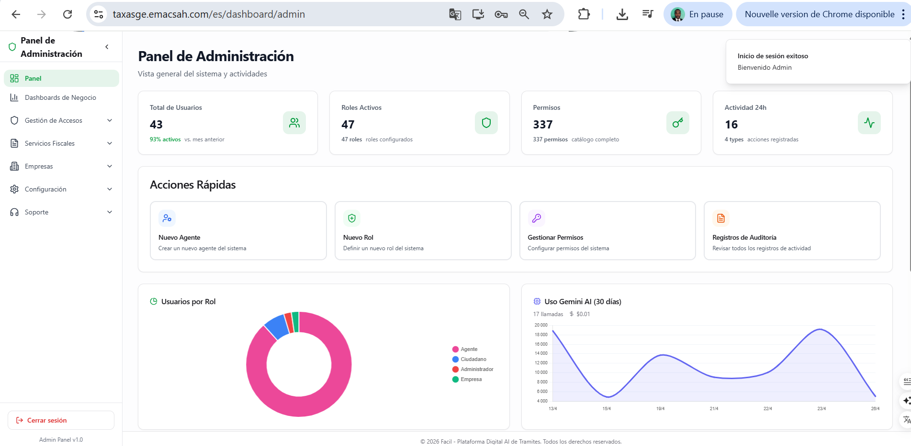
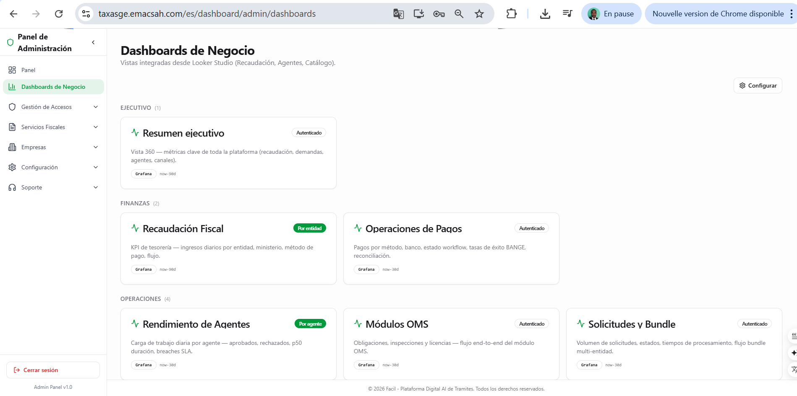

Rol Admin : configuración global de la plataforma
Los administradores son responsables de la configuración técnica y funcional global de Facil. A diferencia de los supervisores (que operan dentro de una entidad), los admin operan a nivel plataforma : RBAC global, catálogo de servicios fiscales, providers de comunicación, configuración del sistema, workflows, traducciones. Esta página da una vista panorámica de las 9 secciones admin disponibles. Cada sección tiene su propia página dedicada (82-89).
1. Dashboard global admin
La pantalla de inicio del admin reúne los indicadores clave de la plataforma : número de usuarios actifs, número de solicitudes en curso, importes tratados del mes, salud de los providers (verde / naranja / rojo), número de alertas no tratadas, etat de los crons.


2. Las 9 secciones del back-office admin
| Sección | Contenido | Página dedicada |
|---|---|---|
| Usuarios + RBAC | Gestión de usuarios, asignación de roles, creación de roles personalizados, permisos granulaires (50+ permisos disponibles) | Página 82 |
| Servicios fiscales | Catálogo de los 850+ servicios, templates de documentos, templates de procédures, tarification | Página 83 |
| Comunicaciones | 5 providers (Email SMTP/SendGrid, SMS Twilio/Africa's Talking, Push FCM/APNs, USSD Getesa/Muni, WhatsApp Business) | Página 84 |
| Empresas | Validación de nuevas empresas, fusión de duplicados, suspensión administrativa, registro mercantil | Página 85 |
| Config Sistema | Configuraciones globales (umbrales SLA, tasas BANGE, paramètres email, mode mantenimiento), conexiones BANCO | Página 86 |
| Audit Logs | Trazabilidad completa (7 colonnes, retention 7 ans, chain_hash, alertes configurables, export RGPD) | Página 87 |
| Traducciones | Gestión ES/FR/EN — 5.000+ claves UI + 1.100+ entidades, import/export CSV, cache Redis 1h | Página 88 |
| Workflow Designer | Creación visual de workflows para servicios nuevos, modificación de los existantes, validación par règles métiers | Página 89 |
| Menu Config | Configuración dinámica de los menús por rol (workflow_menu_mapping + menu_config explicite) | Página 89 §3 |
3. Sépration des pouvoirs : admin vs admin-técnico
En las grandes organizaciones (ministerio DGI, Tesoro), el rol Admin se divide en dos sub-roles para respetar el principio de separación de poderes :
- Admin funcional — gestión de los usuarios, servicios, traducciones, audit logs operacionales. No tiene acceso al config sistema, ni a los workflows, ni a los providers.
- Admin técnico — config sistema, workflows, providers, monitoring infrastructura. No puede crear/modificar usuarios ni revisar audit logs personales.
Esta separación evita que una sola persona puede a la vez modificar la configuración técnica y borrar el audit log que prouvería la modificación. Las dos funciones son intencionalmente incompatibles. Solo el director del ministerio puede asignar/retirar los roles Admin.
4. Audit log especial admin : doble registro
Acciones admin = trazabilidad renforcée
Toda acción admin (creación de un usuario, modificación de un workflow, suppresión de un service, cambio de role) está registrada DOS veces : en el audit log general (página 87) Y en una tabla dedicada admin_actions_log con retención permanente (jamás purgée, contrariamente a los 7 años del log general). Esta redondancia garantiza que las acciones admin queden trazables incluso si una manipulación maliciosa logra borrar el log general.